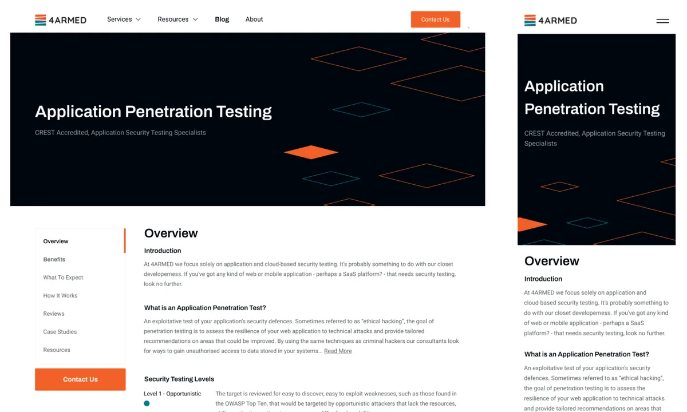
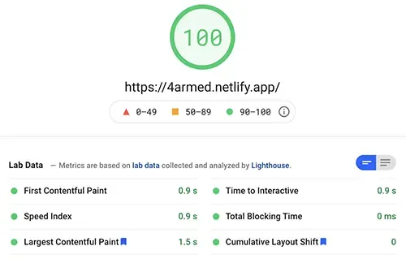

The client
4ARMED is a UK cyber security consultancy that specialises in testing the security of web applications and cloud systems.
Marc, from 4ARMED, asked us to redesign and rebuild the company's existing site. This was a BugleLab project, the web agency I ran at the time.
The problem
Marc felt the site needed a new design, and its services and resources needed reorganising. The site also scored badly on Google's speed tests, mostly because it loaded large third-party libraries like jQuery and Bootstrap on every page.
There was a design challenge too. 4ARMED wanted to show the stack of technologies and services it works across, in a way that was clear rather than just a wall of logos.
The build
Ihsan, our UX and UI designer, created a modern design with a black and white look. It brought 4ARMED's resources to the front and came with a design system, so new pages stay consistent.
We built the site with Hugo:
- One stylesheet: Hugo's Sass pipeline compiles all the styles into a single small file.
- No jQuery or Bootstrap: everything interactive is written in plain JavaScript, so there are no heavy libraries to download.

The results
The new site scored 100 for performance in Google Lighthouse on mobile, up from 31 on the old site.

The custom stack illustration took longer than planned because we built it in plain JavaScript. Looking back, an existing JavaScript library would probably have done the job faster. There's no prize for reinventing the wheel.